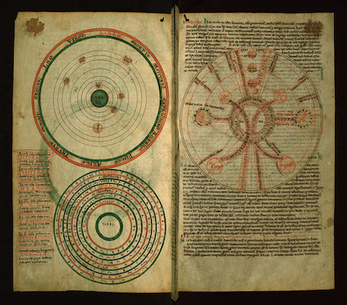

The Walters Art Museum has scanned and released into the public domain a twelfth century illuminated manuscript created by Christian monks that served as a scientific text. The two reproduced pages illustrate ‘the heavens’.¶
Planetary I/O¶
Planetary I/O (Plio) is an open source collection of my commonly used I/O functionality. Plio is licensed in the public domain.
Issues and Version Control¶
This project is hosted on GitHub. If you run into a problem, please open an issue on our issue tracker.